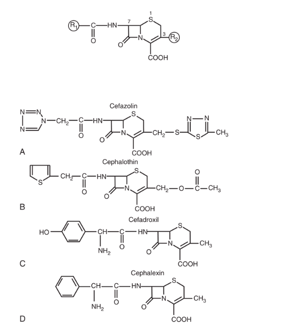

2026-04-20
Russell E. Lewis
Associate Professor of Infectious Diseases
Department of Molecular Medicine
University of Padua
russelledward.lewis@unipd.it
https://github.com/Russlewisbo
Slides and course materials: www.padovaid.com
After this presentation, you will be able to:
1945: Giuseppe Brotzu discovers antimicrobial activity
Amazing fact
Brotzu noticed that locals who swam near sewage outfalls rarely developed typhoid fever, leading to his investigation. It took almost two decades from discovery to clinical use (1964)!
| Year | Milestone |
|---|---|
| 1945 | Brotzu discovers cephalosporin-producing mold |
| 1950s | Florey & Abraham isolate cephalosporin C at Oxford |
| 1964 | Cephalothin - first clinical cephalosporin |
| 1970s | Second-generation cephalosporins |
| 1980s | Third-generation (ceftriaxone, ceftazidime) |
| 2000s | Fourth and fifth generation |
| 2010s | β-lactamase inhibitor combinations |
>20 cephalosporins in clinical use
Among the most widely prescribed antibiotic class due to:

Core structure:
Key difference from penicillins:
Two key modification sites:
| Position | Common Name | Effect on Drug |
|---|---|---|
| C7 (acyl side) | R1 | Spectrum of activity; β-lactamase stability |
| C3 | R2 | Pharmacokinetics; Half-life; CNS penetration |
Remember
R1 = Microbiology; R2 = Pharmacology
α-Carbon modifications at C7:
Cephamycins
Methoxy substitution at C7 → Cefoxitin, Cefotetan
Enhanced anaerobic coverage
Resistance to many β-lactamases
BUT: Reduced gram-positive activity
| Modification | Effect | Example |
|---|---|---|
| Acetoxy side chain | Short half-life | Cephalothin |
| Thiomethyl heterocycle | Long half-life, biliary excretion | Ceftriaxone |
| Quaternary ammonium | Zwitterion, better GN penetration | Cefepime |
MTT Side Chain Warning
Methylthiotetrazole (MTT) at R2:
Found in: Cefamandole, Cefotetan, Cefoperazone
All β-lactams share the same mechanism:
Key Concept: Time-dependent killing
Cephalosporin efficacy correlates with T>MIC (Time drug concentration remains above MIC)
Target: T>MIC of 60-70% of dosing interval
Clinical implications:
| Generation | Gram-Positive | Gram-Negative | Special Features |
|---|---|---|---|
| 1st | ++++ | + | MSSA, strep |
| 2nd | +++ | ++ | Some anaerobes |
| 3rd | ++ | +++ | CNS penetration |
| 4th | +++ | ++++ | Pseudomonas |
| 5th | ++++ (MRSA) | ++ | Anti-MRSA |
Available agents:
Spectrum:
Clinical Pearl
Cefazolin is the #1 drug for surgical prophylaxis
Primary indications:
Surgical prophylaxis (cefazolin)
Skin/soft tissue infections
MSSA bacteremia (cefazolin now preferred to oxacillin/nafcillin)
Streptococcal pharyngitis (oral agents)
Available agents:
*Cephamycins (technically different structure)
Enhanced coverage:
Cefoxitin & Cefotetan
Unique features:
Limitations:
Parenteral agents:
Oral agents:
Key features:
Why Ceftriaxone is Special
Common uses:
Unique Spectrum
Ceftazidime has antipseudomonal activity BUT:
Best uses:
Key advantages:
Dosing: 1-2 g IV q8-12h
Anti-MRSA Activity
Ceftaroline binds to PBP2A → Activity against MRSA
FDA-approved indications:
Limitations:
| Feature | 1st Gen | 3rd Gen | 4th Gen | 5th Gen |
|---|---|---|---|---|
| MSSA | ++++ | ++ | +++ | +++ |
| MRSA | - | - | - | ++++ |
| Strep | ++++ | +++ | +++ | +++ |
| Enterobacterales | + | +++ | ++++ | ++ |
| Pseudomonas | - | +/- | ++ | - |
| Anaerobes | - | +/- | +/- | - |
The problem: β-lactamase production
The solution: β-lactamase inhibitors
Structure: Novel cephalosporin + tazobactam
Key features:
Limitations
NO activity against:
Dosing: 1.5-3 g IV q8h
Structure: Ceftazidime + novel diazabicyclooctane inhibitor
Avibactam inhibits:
Critical Limitation
NO activity against MBL producers (NDM, VIM, IMP)
Avibactam does not inhibit metallo-β-lactamases
Dosing: 2.5 g IV q8h
“Trojan Horse” Mechanism
Unique spectrum:
Dosing: 2 g IV q8h (3-hour infusion)
| Feature | Ceftolozane-Tazo | Ceftaz-Avibactam | Cefiderocol |
|---|---|---|---|
| MDR Pseudomonas | ++++ | ++ | +++ |
| ESBL | +++ | ++++ | +++ |
| KPC | - | ++++ | +++ |
| MBL | - | - | ++++ |
| OXA-48 | - | ++++ | +++ |
| Acinetobacter | + | + | ++++ |
| Drug | Bioavailability | Food Effect |
|---|---|---|
| Cephalexin | 90-100% | Minimal |
| Cefadroxil | 90-100% | Minimal |
| Cefuroxime axetil | 37-52% | ↑ with food |
| Cefpodoxime | ~50% | ↑ with food |
| Cefixime | 40-50% | Minimal |
Clinical Pearl
Prodrug formulations (axetil, proxetil) should be taken with food!
| Drug | Half-Life | Usual Interval |
|---|---|---|
| Cefazolin | 1.5-2 h | q8h |
| Cefuroxime | 1-2 h | q8h |
| Cefotaxime | 1 h | q6-8h |
| Ceftazidime | 1.5-2 h | q8h |
| Ceftriaxone | 6-9 h | q24h |
| Cefepime | 2 h | q8-12h |
Most cephalosporins: Primarily renal excretion
Exception: Ceftriaxone
Practical implications:
Cephalosporins with good CSF penetration (inflamed meninges):
Poor CNS penetration:
Cephalosporins are generally well-tolerated
Most common adverse effects:
| System | Effects | Frequency |
|---|---|---|
| GI | Diarrhea, nausea | 1-19% |
| Hypersensitivity | Rash | 1-3% |
| Hematologic | Eosinophilia | 1-10% |
| Renal | Interstitial nephritis | <1-5% |
The True Risk
Historical quote of 10% cross-reactivity is WRONG
Actual IgE-mediated cross-reactivity: 1-2%
Key points:
Approach:
Ceftriaxone: Biliary Sludge
Avoid: Mixing with calcium in neonates <28 days
Risk factors:
Manifestations:
Cefepime Neurotoxicity
Monitor for altered mental status in patients with renal impairment. Consider dose adjustment or alternative agent.
Coagulation abnormalities (MTT side chain):
Other hematologic effects:
Cefazolin is first-line for:
Dosing: 2 g IV (3 g if >120 kg) within 60 min of incision
Inpatient, non-ICU:
Inpatient, ICU:
Empiric therapy:
Critical Point
3rd generation cephalosporins penetrate CSF well with inflamed meninges but are NOT effective against Listeria!
Antipseudomonal cephalosporin options:
Add coverage based on risk factors:
Community-acquired:
Healthcare-associated/Resistant pathogens:
Uncomplicated cystitis:
Complicated UTI/Pyelonephritis:
| Class | Type | Examples | Inhibited by Avibactam? |
|---|---|---|---|
| A | Serine | ESBLs, KPC | Yes |
| B | Metallo (MBL) | NDM, VIM, IMP | No |
| C | AmpC | Chromosomal, CMY | Yes |
| D | OXA | OXA-48 | Yes |
Key Point
Metallo-β-lactamases (Class B) are NOT inhibited by avibactam or tazobactam. Only cefiderocol maintains activity.
Extended-Spectrum β-Lactamases (ESBLs):
Treatment options:
Mechanism determines treatment:
| Mechanism | Agent of Choice |
|---|---|
| KPC | Ceftazidime-avibactam |
| OXA-48 | Ceftazidime-avibactam |
| MBL (NDM, VIM) | Cefiderocol |
Clinical Pearl
Know your local epidemiology! KPC predominates in some regions, MBL in others.
“SPACE” organisms with inducible AmpC:
Risk: Resistance emergence during therapy with 3rd gen cephalosporins
Preferred agents:
Pregnancy category: Most cephalosporins are Category B
Lactation:
Weight-based dosing (mg/kg/day):
| Drug | Mild-Moderate | Severe |
|---|---|---|
| Cefazolin | 25-50 mg/kg divided q8h | 100-150 mg/kg divided q6-8h |
| Ceftriaxone | 50-75 mg/kg/dose q24h | 80-100 mg/kg/day divided q12-24h |
| Cefepime | 50 mg/kg q12h | 50 mg/kg q8h |
Maximum doses: Generally do not exceed adult doses
Rationale: Optimize T>MIC (time-dependent killing)
Options:
Best evidence for:
Bottom Line
Cephalosporins remain essential antibiotics. Selection should be based on:
Guidelines:
Clinical Pearls to Remember:
| Drug | Route | Usual Adult Dose |
|---|---|---|
| Cefazolin | IV | 1-2 g q8h |
| Cephalexin | PO | 500 mg q6h |
| Cefuroxime | IV | 0.75-1.5 g q8h |
| Ceftriaxone | IV/IM | 1-2 g q24h |
| Ceftazidime | IV | 1-2 g q8h |
| Cefepime | IV | 1-2 g q8-12h |
| Ceftaroline | IV | 600 mg q12h |
| Ceftolozane-tazo | IV | 1.5-3 g q8h |
| Ceftazidime-avi | IV | 2.5 g q8h |
| Cefiderocol | IV | 2 g q8h |
| Generation | Prototype | Key Feature |
|---|---|---|
| 1st | Cefazolin | Gram-positive; prophylaxis |
| 2nd | Cefuroxime | Enhanced GN; cephamycins for anaerobes |
| 3rd | Ceftriaxone | Broad GN; CNS penetration |
| 4th | Cefepime | Broad spectrum; Pseudomonas |
| 5th | Ceftaroline | MRSA activity |
| BLI | Various | Overcomes β-lactamases |
Cephalosporins: From Sardinian Sewage to Modern Medicine
Questions and Discussion Welcome